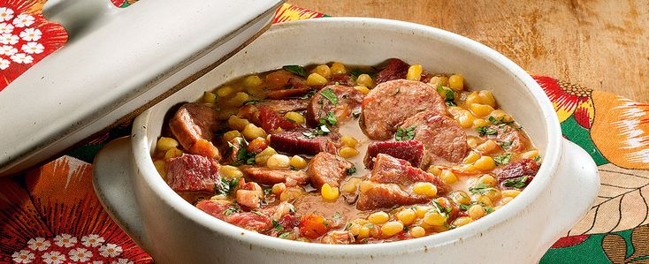

MUNGUNZÁ

O mugunzá salgado é feito com milho, feijão e carne de porco. É uma variação do mungunzá tradicional, encontrada no sul do Ceará e oeste dos estados da Paraíba, Pernambuco e Rio Grande do Norte, o qual leva ingredientes semelhantes aos da feijoada. Assemelha-se ao prato tradicional cabo-verdiano Cachupa.
Ingredientes
- 250 gramas de milho de mungunzá
- Meia colher (sopa) de óleo
- 50g de bacon picado
- 3 dentes de alho amassados
- 1 cebola média picada
- 1 gomo de linguiça portuguesa em rodelas (100g)
- 1 gomo de paio em rodelas (100g)
- 300 gramas de costelinha de porco dessalgada
- 250 gramas de carne-seca dessalgada
- 2 tomates sem sementes, picados
- 3 xícaras (chá) de água
- 1 pitada de pimenta-do-reino
- 2 colheres (sopa) de coentro fresco picado
- 2 colheres (sopa) de cebolinha-verde picada
Modo de Preparo
- Em uma panela de pressão, coloque o mungunzá e adicione 1 e meio litros de água e leve ao fogo médio por cerca de 40 minutos, após pegar pressão.
- Espere sair toda a pressão e reserve em um recipiente à parte (grãos e caldo).
- Na mesma panela de pressão (já limpa) aqueça o óleo, doure o bacon, junte o alho e a cebola e deixe refogar. Junte a linguiça, o paio, a costelinha, a carne-seca e os tomates e refogue bem. Acrescente a água, tampe a panela e deixe cozinhar por cerca de 30 minutos, após pegar pressão.
- Desligue o fogo, deixe sair toda a pressão, abra a panela e junte o mungunzá com o caldo reservado, a pimenta, o coentro e a cebolinha verde.
- Deixe ferver por cerca de 30 minutos, para apurar e tomar gosto. Sirva a seguir.